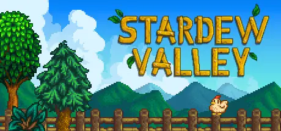

Curated discoveries · Made for curious players
Your next great game
starts here.
A quiet escape. A clever puzzle. One more adventure. Find a game that fits your mood, not just the hype.
Explore the games15 handpicked games. Your own shortlist.

Small beginnings. A world of possibilities.
Find your farming escape →A good place to begin
Small collection. Big possibilities.
Four different ways to spend your next free evening.
Loading our picks…
Recommendations, with context
A guide, not a leaderboard.
Our scores are guide editorial discovery recommendation scores out of 10: subjective demonstration recommendations, not aggregated professional or player ratings and not personal opinions authored by Yesid Fernando Cepeda. Read the description, check the platform, and choose what speaks to you.